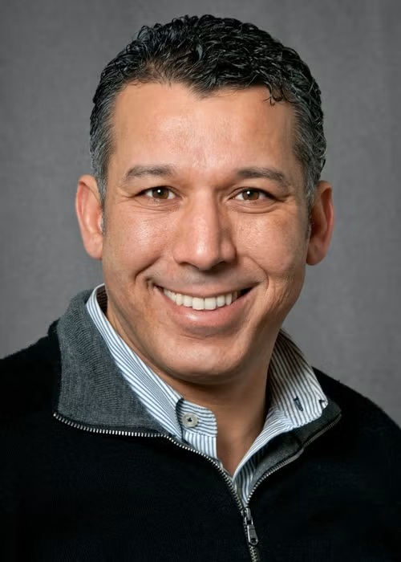
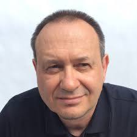
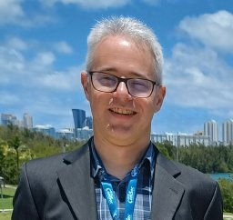

<div class="uk-section uk-padding-remove-vertical">
  <div class="uk-container">

    <h1>CNSM 2025 Distinguished Expert Panel</h1>


      <h2 class="cn-blue">Sustainable Network Management in the Age of AI: Reducing Power Consumption and Carbon Footprint</h2>

      <p  class="cnsm-theme">
      This panel will address the urgent need to design and operate communication networks that are both high-performing and environmentally sustainable. As global data traffic continues to surge, AI-driven methods are emerging as powerful enablers for optimizing energy efficiency across network infrastructures, services, and operations. Panelists from academia, industry, and network operators will share insights on how AI can drive reductions in power consumption and carbon footprint without compromising innovation, reliability, or user experience. The conversation will not only highlight technical solutions but also examine economic models, and collaborative strategies to align network evolution with global sustainability goals such as the UN's Sustainable Development Goals (SDGs) and carbon neutrality targets.
      </p>


      <h2>Panelists</h2>

      <p>
        
        
        <b>Prof. Raouf Boutaba</b> is currently a University Professor and the Director of the David R. Cheriton School of Computer science at the University of Waterloo (Canada). Before that he served as the Associate Dean Research and the founding Associate Dean Innovation and Entrepreneurship. He held an Inria international chair in network softwarization (2017-2022) and a University Research Chair at Waterloo (2018-2025). He currently holds the Rogers Chair in Network Automation and a senior Canada Research Chair in Network Intelligence. His research interests fall in the areas of computer networking and distributed systems. Dr. Boutaba served as the founding Editor-in-Chief of the IEEE Transactions on Network and Service Management (2007-2010) and the Editor-in-Chief of the IEEE Journal on Selected Areas in Communications (2018-2021). He is a fellow of the IEEE, the Engineering Institute of Canada, the Canadian Academy of Engineering, and the Royal Society of Canada.<br/><br/><br/>
      </p>

      <p>
        

        <b>Dr. Alexander Clemm</b> is a recognized expert in network management technology and networking software. His most recent activities have been in the areas of sustainable networking, future networking services, intent-based networking, service assurance, and telemetry. After spending 7+ years as a Distinguished Engineer at Futurewei and (before that) 18 years at Cisco, as well as moonlighting as an Adjunct Professor at the University of Santa Clara, he recently decided to pursue an academic sabbatical and embark on new adventures. Alex has been for many years a member of the CNSM community, including as general chair way back in 2007. He is the recipient of the 2020 Salah Aidarous Award given by IEEE CNOM and IFIP TC6.6 to "an individual who has provided unremitting service and dedication to the IT and Telecommunications Network Operations and Management community". Alex has an extensive publication record including 70+ papers, 70+ patents, and 16 RFCs. He holds an M.S. degree from Stanford University and a Ph.D. from the University of Munich, Germany, both in Computer Science.<br/><br/>
      </p>


      <p>
        

        <b>Dr. Nicola Di Cicco</b> is an Operations Research Scientist at OPTIT. He holds a PhD in Information Technology from Politecnico di Milano and specializes in the design of advanced optimization algorithms. At OPTIT, Nicola Di Cicco develops these algorithms through cloud-based microservices systems, ensuring scalability and seamless integration with business processes. His work supports solutions that help companies reduce error-prone manual labor, minimize their environmental footprint, and improve resource management, while connecting academic research with industrial needs. OPTIT is an Italian company that enables businesses to make optimal decisions at every level with mathematics and artificial intelligence. It creates value in complex, data-rich environments through advanced analytics, optimization models, and tailored software solutions. This approach delivers measurable competitive advantage in energy, waste management, logistics, and retail, where clients often achieve ROI within 12-18 months.<br/><br/>
      </p>

      <p>
        

        <b>Prof. Rolf Stadler</b> is a Professor with the KTH Royal Institute of Technology and the Head of the Division of Network and Systems Engineering. He received the M.Sc. degree in mathematics and the Ph.D. degree in computer science from the University of Zurich. Before joining the KTH Royal Institute of Technology, Stockholm, Sweden, in 2001, he held positions at the IBM Zurich Research Laboratory, Columbia University, and ETH Zürich. His group made contributions to real-time monitoring, resource management, and automation for large-scale networked systems. His current research interests include data-driven methods for network engineering and management and AI techniques for cybersecurity. He was the Editor-in-Chief of IEEE Transactions on Network and Service Management from 2014 to 2017.<br/><br/>
      </p>

      <h2>Moderator</h2>

      <p>
        

        <b>Dr. Guillaume Fraysse</b> is a Research Project Manager at Orange Innovation Networks, Paris, France. He first received a Software Engineering M. Sc. Degree in 1999 from the University of Bordeaux and worked as an engineer or architect in different capacities at Orange while receiving a M. Sc. Degree in Distributed Systems in 2003 and his PhD in Computer Science in 2020, both from Sorbonne Université in Paris. He is currently leading the COgnitive and Resilient NEtwork operaTions (CORNET) research project at Orange Innovation.
      </p>

    </div>
</div>
